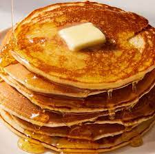

Pancakes

Pancake Recipe
This is easy recipe for great delicoius pancakes
Ingredients
- Flour
- Baking Powder
- Sugar
- Salt
- Milk
- Eggs
How to Make Pancakes From Scratch
It's not hard to make homemade pancakes- you just need a good recipe.That's wherewe come in! You'll find the step-by-step recipe below, but here's a brief overview of what you can expect:
- Sift the dry
- Make a well, then add the wet ingredients. Stir to combine.
- Scoop the batter onto a hot friddle or pan.
- Cook for two to three minutes, then flip.
- Continue cooking until brown on both sides.